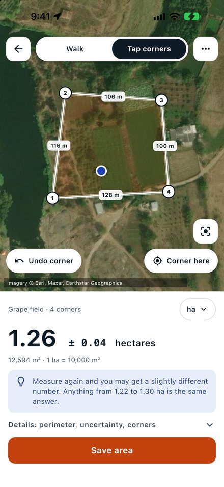

How to measure land with your phone
You can measure the area of a field or plot with a free app and your phone's GPS, in bigha, guntha, acre or hectare. Here is how to get a result you can trust.

1. Get a good GPS fix
Go outside, away from buildings and trees. Open FixPoint and turn on Precise Location. Wait until the signal says Good or Excellent (within 3 to 5 m).
2. Choose how to measure
Walk: tap Measure area → Walk, then walk along the boundary. Stop for about 5 seconds at each corner so the app can average it.
Tap corners: tap Measure area → Tap corners, zoom into the satellite map and tap each corner of the field.
3. Read the result
FixPoint shows the area with a ±, for example 5.02 ± 0.14 bigha. The ± tells you the range: measuring again may give a slightly different number inside it. Change the unit from the menu next to the area. Set your state in Settings → Land units so bigha or guntha use your state's definition.
4. Save and share
Save the area to a project. Export it to Excel, PDF or KMZ (opens in Google Earth), or share it on WhatsApp.
Tips for a better result
- Mark corners in the open, not under trees.
- Pause at every corner when walking.
- For small plots (under 500 m²), GPS error matters more: tap corners on the map or measure the sides with a tape and use "Draw from dimensions".
- For land registry and legal disputes, get an official survey. FixPoint is an estimate with its ±.
Need to convert the result? Use the land unit converter.
Questions
Is measuring land with a phone accurate?
For most fields, yes, within a few percent. A phone in the open is usually accurate to 2 to 5 metres per corner. On a 1-hectare field that is roughly ±3%. FixPoint shows this ± with the result.
Walk or tap corners: which is better?
Walking the boundary uses your GPS and works where the satellite map is unclear. Tapping corners on the map is faster for fields you can see clearly in satellite imagery.
Can I measure land without going there?
Yes, by tapping corners on the satellite map, if the boundaries are visible. Walking it gives you your own GPS record of the corners.